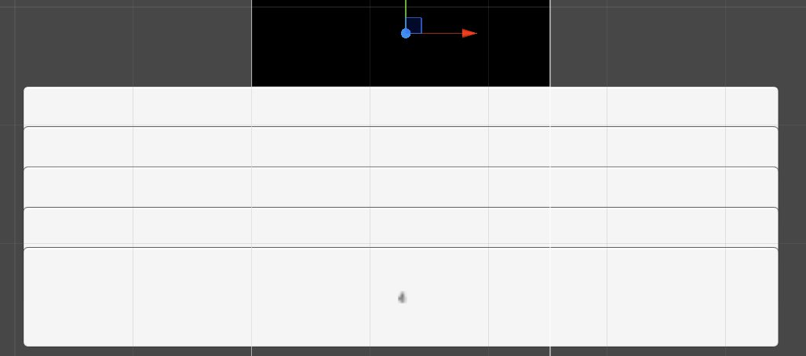
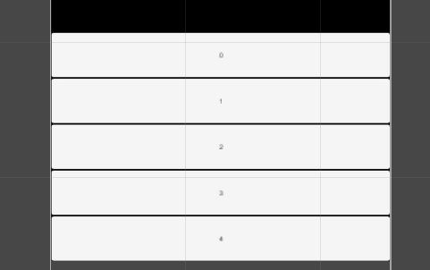

uGUI で動的にボタンを作る
ボタンを動的に作って縦並びにする
uGUI使って、ボタンは動的に生成し、縦並びにボタンを並べたい。
普通にVertical Layout Groupコンポーネントをつけたオブジェクトにボタンを突っ込んでいけばいいはずだ。
UIエレメントでもいつもどおり、複製したいボタンをPrefab化しておいて、Instantiate すれば良いだろう。
↓みたいな感じでとりあえず書いた。
// Vertical Layout Group コンポーネントをつけたGameObject
Transform list = transform.FindChild("List");
for(int i = 0; i < 5; i++) {
//プレハブからボタンを生成
GameObject listButton = Instantiate(listButtonPrefab) as GameObject;
//Vertical Layout Group の子にする
listButton.transform.SetParent(list);
//適当にボタンのラベルを変える
//※ Textコンポーネントを扱うには using UnityEngine.UI; が必要
listButton.transform.FindChild("Text").GetComponent<Text>().text = i.ToString();
}
結果、全然綺麗に並ばず。

SetParentにworldPositionStays=false が必要
調べた結果、Creating UI elements from scripting
Transform.SetParent メソッドの worldPositionStays パラメータを false にしてねってことらしい。
というわけで、以下のように修正
listButton.transform.SetParent(list, false);
結果、綺麗に並んだ。

クリックイベントを追加する
ボタンだから押せないと意味が無い。
イベントは ButtonのOnClick.AddListenerにメソッドを登録すれば良い。とりあえず、何番目のボタンが押されたかログを出してみる。
スコープの関係で i を n に一度代入している（参考:匿名メソッドとデリゲート）。
void Start () {
Transform list = transform.FindChild("List");
for(int i = 0; i < 5; i++) {
//プレハブからボタンを生成
GameObject listButton = Instantiate(listButtonPrefab) as GameObject;
//Vertical Layout Group の子にする
listButton.transform.SetParent(list,false);
listButton.transform.FindChild("Text").GetComponent<Text>().text = i.ToString();
//以下、追加---------
int n = i;
//引数に何番目のボタンかを渡す
listButton.GetComponent<Button>().onClick.AddListener(() => MyOnClick(n));
}
}
void MyOnClick(int index){
print(index);
}
確認バージョン
Unity 4.6